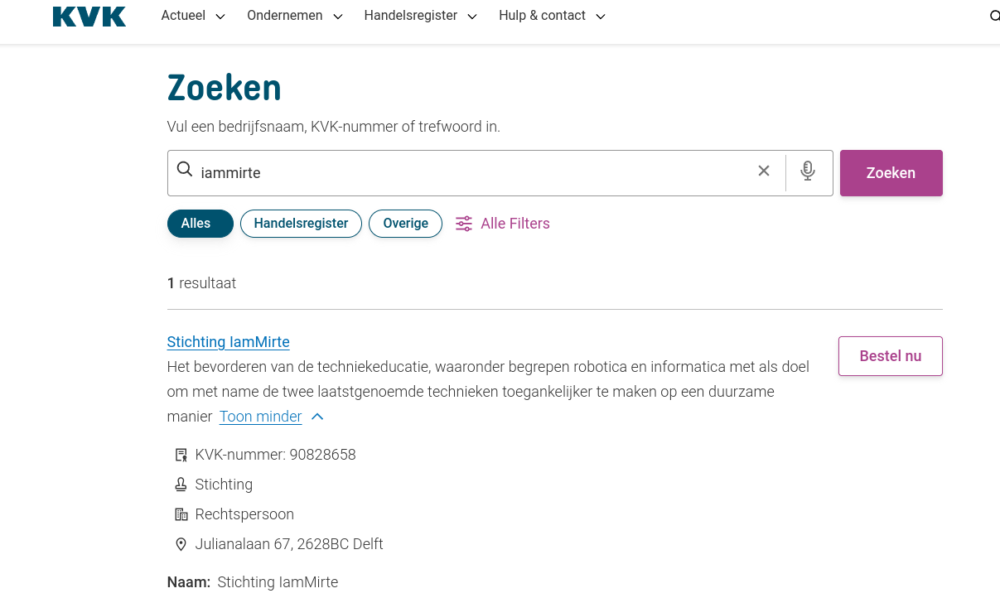
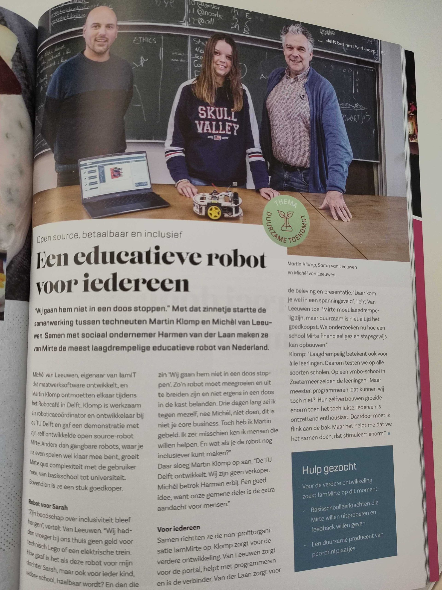

Over iamMirte
I Am Mirte is een stichting
De stichting iamMirte is een feit! Achter de schermen zijn wij, Ellen, Maritn en Michel, al geruime tijd bezig met Mirte en het doel van onze stichting. Deze stap is fijn, maar nog maar het begin van de reis die Mirte met ons gaat maken.
14 July 2023
Artikel over het begin van iamMirte
Dot business (een netwerk organisatie regio Delft) met als thema “Duurzame toekomst” heeft een mooi artikel geschreven over hoe iamMirte is begonnen.
22 December 2022